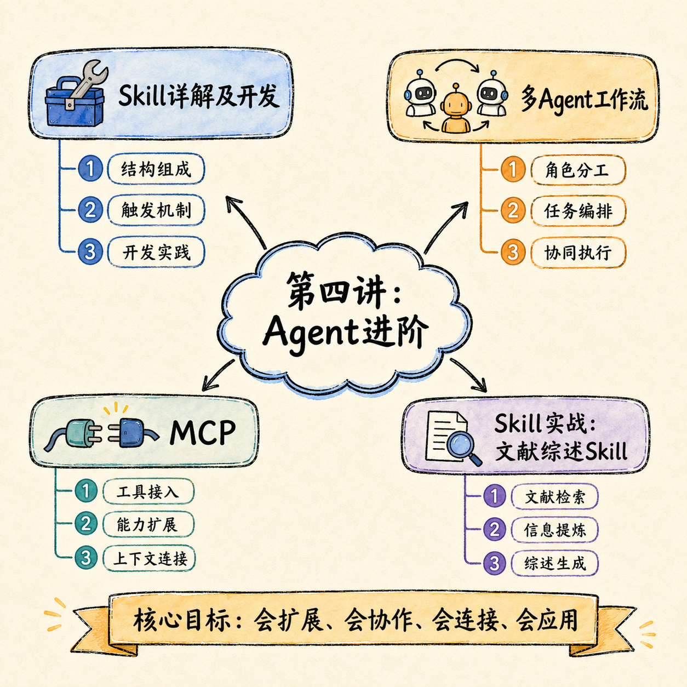
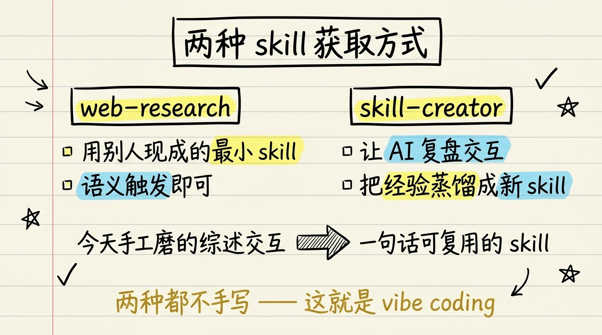
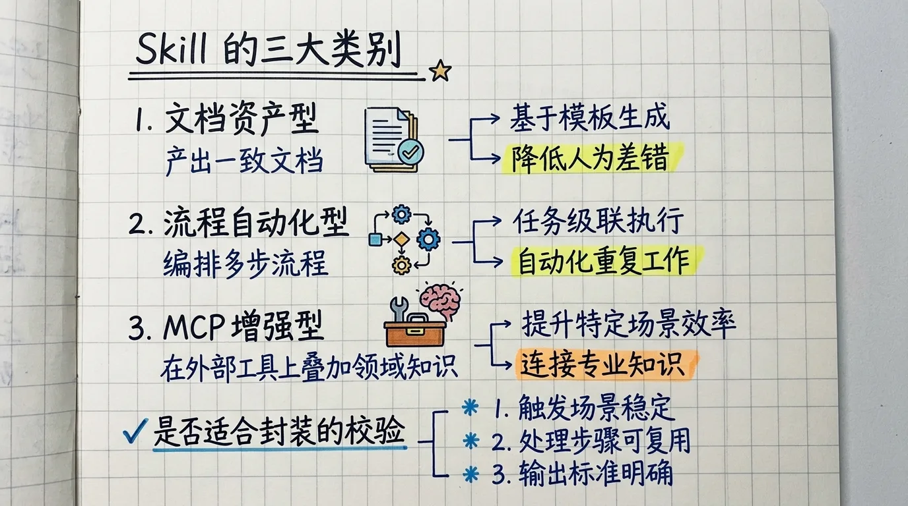
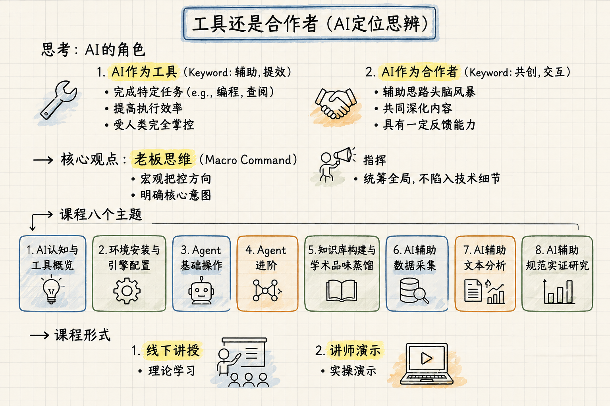

第四讲：Agent 进阶
课程讲义 · 网页教材
课程： 人工智能在经济管理研究中的应用
授课人： 张晨（西北农林科技大学经济管理学院）
第 4 次课 | 2 课时 | 2026 年夏季学期

本讲概览
上一讲你学会了怎么用 Skills 和怎么管理 Agent 会话。本讲的目标是：从「会用」到「会建」——不再只当 Skills 的消费者，而是自己创造和编排 Skills，搭建属于你自己的 Agent 工作流。
具体来说，你要掌握三件事：
- 创建自定义 Skill——把成功经验冻干成可复用的操作手册，让 AI 每次都按你的方式干活
- 掌握 do-agent 编排架构——把复杂任务拆成多个子代理并行执行，通过文件系统协作
- 理解 MCP 协议——让 AI 连接外部工具和数据源，扩展 Agent 的能力边界
教学逻辑： Skill min 结构（怎么写）→ skill-creator 复盘工作流（怎么写得好）→ do-agent 编排（怎么让多个 Agent 配合）→ MCP（怎么扩展 Agent 的外界连接能力）。
上节：Skills 创建——从经验到可复用操作手册
1. Skill 的 min 结构
1.1 SKILL.md 的最小骨架
Skill 本质是一个文件夹，里面至少包含一个 SKILL.md 文件。它是用自然语言写的「操作手册」，告诉 AI 遇到某类任务时该怎么做。
SKILL.md 的最小结构由两部分组成：
---
name: my-skill-name
description: 一句话描述这个技能做什么，用于语义匹配
---
# Skill 标题
## 何时触发
描述什么情况下应该调用这个技能
## 执行流程
1. 第一步做什么
2. 第二步做什么
3. ...
## 注意事项
- 什么不能做
- 什么需要人工确认第一部分：YAML Frontmatter（--- 包裹的部分）。这是 Skill 的「身份证」——name 是唯一标识，description 用于语义匹配。AI 根据你的任务描述和 Skill 的 description 之间的语义相似度，决定是否触发该 Skill。
第二部分：Markdown 正文。 这是 Skill 的「操作手册」，告诉 AI：
- 何时触发：什么情况下调用
- 执行流程：一步步怎么做
- 注意事项：什么不能做、什么需要人工确认
1.2 渐进式加载机制
这是 Skill 设计中最巧妙的机制：
启动阶段 → 只加载 YAML frontmatter（name + description），约占 2-3 行
触发阶段 → 当任务语义匹配到某个 Skill 时，才加载完整 SKILL.md好处： AI 可能装了 30 个 Skills，但每次只加载真正用到的几个。这大幅节省了上下文窗口——如果一次性加载所有 Skills 的全部内容，可能占用几千行上下文，留给实际任务的窗口就很小了。
1.3 两层存储
| 层级 | 路径 | 作用范围 |
|---|---|---|
| 个人级 | ~/.claude/skills/ |
所有项目通用，如 stata-regression、literature-review |
| 项目级 | <project>/.claude/skills/ |
仅当前项目，如特定数据格式的处理规则 |
建议： 通用能力放个人级（如 Stata 回归、文献综述），项目特定规则放项目级（如某数据集的特殊清洗步骤）。
2. skill-creator：复盘工作流
2.1 核心原则：不要从零写 Skill
从零写 Skill 就像闭门造车——你以为你知道需要什么，但实际使用中总会漏掉关键步骤。
正确的创建流程是一个「复盘蒸馏」的过程：
跑通一个任务（多轮人机交互）
→ 在同一个会话窗口里（不清空上下文）
→ 调用 skill-creator
→ AI 复盘整个交互过程
→ 蒸馏为可复用的 SKILL.md
2.2 为什么一定要在同一个会话窗口？
因为上下文里保留了完整的交互历史——每一步怎么做的、踩了什么坑、哪个参数需要调整、你纠正了 AI 哪一步。skill-creator 需要这些「经验」才能写出好的 Skill。
比喻： 在同一个会话窗口里复盘 = 带着全部记忆洗澡反思。如果在全新会话里创建 Skill = 凭印象写回忆录，一定会漏掉很多细节。
2.3 skill-creator 工作流详解
第一步：跑通任务
你: 「帮我做一次完整的回归分析，读数据 → 描述统计 → 基准回归 → 输出表格」
AI: 执行（可能会试错、你在中途纠正）
你: 纠正变量的选择、标准误的聚类层级等
第二步：复盘（同一个会话，不要 /clear）
你: 「请调用 skill-creator，根据我们刚才的整个交互过程，
帮我创建一个 Skill。」（描述 Skill 应具备的功能）
第三步：skill-creator 复盘
AI 分析上下文中的：
- 你用了什么命令
- 你踩了什么坑
- 你纠正了哪些参数
- 哪些步骤容易出错
- 什么需要人工确认
第四步：蒸馏为 SKILL.md
AI 生成结构化操作手册，包含：
- 完整的执行步骤
- 每个步骤的常见错误和处理方法
- 人工确认节点（哪些结果必须人看）
- 输出格式要求
第五步：审核和修改
你通读 SKILL.md，修改不满意的地方，保存到 skills 目录。
3. 实战：创建「Stata 回归」Skill
3.1 准备工作
确保你的环境中已经安装了 Stata，并且 AI 能够通过命令行调用它。参考第一部分的安装教程中关于命令行环境配置的内容。
3.2 操作步骤
第一步：跑通一次完整的回归流程
在 Agent 中完成一次完整的回归任务：
请帮我完成以下分析：
1. 读取当前目录下的 mydata.dta 文件
2. 生成主要变量的描述统计表格
3. 运行基准回归：y = x1 + x2 + x3，控制固定效应，标准误聚类到个体层面
4. 使用 esttab 输出回归表格到 output/ 目录在这个过程中，如果遇到问题（如变量名不存在、缺失值处理），和 AI 一起解决。记录下每个踩坑的点。
第二步：调用 skill-creator 复盘
在同一个会话中（不要 /clear），输入：
请调用 skill-creator，根据我们刚才的整个交互过程，
帮我创建一个 "stata-regression" Skill。
这个 Skill 应该能：
- 读取 .dta 文件并确认变量名
- 生成描述统计（summarize, tabstat）
- 执行基准回归并输出 esttab 表格
- 处理常见的 Stata 错误（如变量名不存在、缺失值警告、标准误聚类层级问题）
- 在关键节点设置人工确认点（模型规格确认、回归结果审核）第三步：审核生成的 SKILL.md
重点关注：
- 执行步骤是否完整、顺序是否正确
- 常见错误列表是否覆盖了你实际遇到的情况
- 人工确认节点的设置是否合理
- 输出格式是否符合你的论文写作习惯
第四步：保存和测试
保存到 ~/.claude/skills/stata-regression/SKILL.md。
新开一个会话，用另一份数据测试你刚创建的 Skill：
请按照 stata-regression Skill 的流程，帮我分析 newdata.dta如果发现有遗漏或不合理的地方，回到原会话修改 SKILL.md。
3.3 Skill 迭代原则
- 第一次不可能完美。 用几次后根据实际输出修改规则，越磨越好用
- 每个 Skill 保持单一职责。 不要让一个 Skill 同时做回归、做图、做文献——拆分比合并好
- Skill 要反映你的研究范式。 不同领域的回归规范不同（聚类层级、固定效应选择、控制变量集合），Skill 应该体现你的学科惯例
下节：多 Agent 编排与 MCP
4. do-agent：通用多 Agent 编排架构
4.1 什么是 do-agent？
do-agent 是一个极简但极其强大的编排 Skill——核心 SKILL.md 只有约 20 行，但它编码了让多个 Agent 高效协作的完整方法论。
核心思想： 复杂任务不要交给一个 Agent 硬做——拆成多个子任务，每个分配给专门的子代理，通过文件系统交接结果，最后合成。
4.2 四大原则
原则一：先探索-思考-规划，再执行
不要一上来就动手。先理解任务全貌，设计执行方案，列出子任务清单，再开始分配。
错误做法：「帮我做一个文献综述」→ AI 直接开始逐篇读
正确做法：「帮我做一个文献综述」→ AI 先列出步骤计划 → 你确认 → AI 执行原则二：设计多 Agent 多阶段执行计划
把复杂任务拆成独立的子任务，每个子任务分配给一个专门的子代理。子代理之间不直接通信，通过文件系统交接。
原则三：子代理通过文件通信（最重要！）
严禁将子代理的完整输出返回给主代理。 每个子代理必须将结果立即保存到本地文件，主代理只读到状态摘要。
原因：上下文窗口是稀缺资源。 如果 5 个子代理各返回 2000 行输出，主代理的上下文被占满，无法有效整合结果。
原则四：审查-修订循环
子代理产出结果 → 主代理（或另一个审查代理）检查 → 发现问题 → 修订 → 再检查。直到质量合格。

4.3 do-agent 工作流示意
主代理（编排者）
│
├── 分析任务，拆解为 3 个子任务
│
├── 委派 子代理A
│ ├── 读取 notes/task_a.md （任务说明）
│ └── 输出 notes/result_a.md （结果，不返回主代理）
│
├── 委派 子代理B
│ ├── 读取 notes/task_b.md
│ └── 输出 notes/result_b.md
│
├── 委派 子代理C
│ ├── 读取 notes/task_c.md
│ └── 输出 notes/result_c.md
│
├── 审查代理
│ ├── 读取 notes/result_a.md, result_b.md, result_c.md
│ ├── 检查一致性、发现错误和遗漏
│ └── 输出 notes/review.md
│
└── 合成代理
├── 读取所有 result 文件 + review.md
└── 输出 output/final.md4.4 文件通信的具体实现
每个子代理的任务说明写在独立的文件中：
notes/task_a.md
任务：读取并分析论文 A
输入：input/papers/paper_a.pdf
要求：
1. 提取研究问题、识别策略、主要结论、核心贡献
2. 分析研究方法（数据来源、样本量、计量模型）
3. 列出论文的主要局限
输出：notes/paper_a_summary.md
格式：使用 ## 标题分段，每条信息单独成行子代理完成后，主代理读取 notes/paper_a_summary.md 的内容摘要（而不是让子代理把全文吐回上下文）。
5. MCP 协议入门
5.1 什么是 MCP？
MCP（Model Context Protocol）是一种标准化协议，让 AI Agent 能连接外部工具和数据源。
比喻： MCP 是「AI 世界的 USB-C 接口」——插上什么设备，AI 就能用什么工具。插上数据库，AI 能查询数据；插上搜索引擎，AI 能搜索网页；插上 Zotero，AI 能管理文献。
5.2 MCP 可以连接什么？
| 连接对象 | 功能 | 典型场景 |
|---|---|---|
| 数据库（SQLite、PostgreSQL） | 直接查询数据库 | 「帮我查一下 2020 年 CHFS 样本的户均收入」 |
| 搜索引擎（Brave Search、Tavily） | 搜索网页 | 「搜索最近关于数字金融的最新文献」 |
| 文献管理（Zotero） | 读写文献库 | 「把我的 Zotero 库中关于 DID 的论文列出来」 |
| 文件系统 | 读写本地文件 | 「遍历 input/ 下所有 CSV 文件」 |
| API 服务 | 调用外部 API | 「通过 Crossref API 查询这篇论文的被引次数」 |
5.3 一个典型的 MCP 配置
在 Claude Code 中，MCP 通过配置文件定义：
{
"mcpServers": {
"brave-search": {
"command": "npx",
"args": ["-y", "@anthropic-ai/mcp-server-brave-search"],
"env": {
"BRAVE_API_KEY": "your-key-here"
}
}
}
}配置后，Agent 就可以直接搜索网页，而不需要你手动复制粘贴链接。
5.4 Skill vs MCP：什么时候用什么？
| 维度 | Skill | MCP |
|---|---|---|
| 定位 | 封装工作流程和专业知识（怎么做） | 连接外部工具和数据源（用什么做） |
| 形式 | Markdown 文件（自然语言操作手册） | JSON 配置 + 服务端程序 |
| 举例 | 「如何一步步做文献综述」 | 「如何连接 Zotero 数据库」 |
| 关系 | 互补——Skill 里可以调用 MCP 工具 | MCP 为 Skill 提供外部能力 |
一句话： Skill 告诉 AI 怎么做，MCP 给 AI 提供做的工具。两者常常一起使用——一个文献综述 Skill，调用 MCP 连接的搜索引擎来搜索文献，调用 MCP 连接的 Zotero 来管理引用。
6. 实战：创建 literature-review Skill
6.1 任务描述
将上一讲实战中多 Agent 文献综述的完整流程封装为一个可复用的 Skill。
6.2 操作步骤
第一步：回顾上一讲的交互过程
打开上一讲文献综述实战的会话记录（在 ~/.claude/projects/ 目录下），回顾：
- 你是怎么给 AI 下指令的
- AI 怎么拆分子任务
- 子代理怎么并行工作
- 汇总阶段遇到了什么问题
- 你做了哪些纠正
第二步：调用 skill-creator 复盘蒸馏
在与文献综述实战相同（或基于 notes/ 记录重建）的会话中：
请调用 skill-creator，将我们做文献综述的完整流程封装为 Skill。
要求：
- Skill 名称：literature-review
- 功能：输入一个包含 PDF 论文的文件夹，输出一份结构化的文献综述
- 流程：
1. 扫描 input/papers/ 目录，列出所有 PDF 文件
2. 将 PDF 转换为 Markdown 格式以便 AI 阅读（调用 markitdown 或相关转换工具）
3. 并行委派子代理提取每篇论文的关键信息
4. 子代理将结构化摘要写入 notes/ 目录
5. 审查代理检查各摘要的一致性和完整性
6. 合成代理汇总为文献综述初稿，输出到 output/
- 注意事项：
- 子代理必须通过文件通信，不得将完整输出返回主代理
- 引用的文献信息必须标注「需人工核实」
- 每篇论文的引用格式必须统一
- 综述中不得编造文献引用第三步：审核和修改
检查生成的 SKILL.md：
- 步骤是否完整、可操作
- 是否包含了「引文必须人工核实」的警告
- 输出格式是否符合学术规范
- 是否设置了合理的人工确认节点
第四步：保存
保存到 ~/.claude/skills/literature-review/SKILL.md。
第五步：测试
新开一个会话，放入另一组论文（与创建时不同的论文），用刚创建的 Skill 跑一次：
请按 literature-review Skill 的要求，分析 input/papers/ 中的论文，
生成文献综述初稿。观察：
- Skill 是否正确触发
- 执行流程是否按预期进行
- 输出质量是否符合要求
- 有哪些地方需要改进
第六步：迭代优化
根据测试结果修改 SKILL.md。重点优化：
- 触发条件的描述是否准确
- 执行步骤是否需要调整顺序
- 注意事项是否需要补充
7. 本讲核心概念回顾
| 概念 | 一句话解释 |
|---|---|
| SKILL.md min 结构 | YAML frontmatter（name + description）+ Markdown 操作手册 |
| 渐进式加载 | 启动时只加载 frontmatter，触发时才加载完整内容——节省上下文窗口 |
| skill-creator 复盘工作流 | 跑通 → 复盘（同一会话）→ 蒸馏 → 审核 → 保存 → 测试 |
| do-agent 四原则 | 先规划 → 多 Agent 委派 → 文件通信 → 审查修订 |
| 文件通信铁律 | 子代理结果必须写入文件，严禁将完整输出返回主代理 |
| MCP = USB-C | 连接外部工具和数据源的标准化协议 |
| Skill vs MCP | Skill 告诉怎么做，MCP 给做的工具——两者互补 |
8. 课后任务
- 创建一个自定义 Skill（至少一个），可以是你领域常用的：
- Stata 回归分析 Skill
- 论文审稿 Skill
- 文献综述 Skill
- 数据清洗 Skill
- 用 do-agent 四原则完成一次至少包含 3 个子代理的复杂任务
- 尝试配置一个 MCP 服务（如 Brave Search 或 Tavily），让 AI 能直接搜索网页
- 将你创建的所有 Skill 保存到
~/.claude/skills/，确保跨项目可用 - 为你创建的每个 Skill 写一条测试用例，新会话中验证可用性
课堂参考材料
| 文件 | 内容 |
|---|---|
Part1-AI工具介绍与环境配置.md |
Skills 安装与 Agent 创建基础 |
Part2-Agent操作与知识库构建.md |
本讲详细教学内容 |
参考图片目录： reference/html/A1 构建工作台/_files/